Omnissa Horizon 2503: Master Virtual Desktop
Navigation
Use this post to build a virtual desktop that will be used as the parent image (aka source image, aka master image, aka gold image) for additional virtual desktops. There's a separate article for RDS Session Host.
This post applies to all Horizon versions 2006 (aka 8.0) and newer.
- Change Log
- Virtual Hardware
-
Windows
:idea: = Recently Updated
Change Log
- 2025 April 17 - Horizon Agent - updated for Horizon 2503 (8.15), DEM 2503, and OS Optimization Tool 2503.
- 2023 July 7 - added link to VMware 93158 Information about changes in logon timing data format in Horizon form Horizon 8 2111 and Later.
- 2022 Nov 29 - added link to Tristan Tyson On-boarding VMware Horizon View Instant-Clone VDI Pools into Microsoft Defender Advanced Threat Protection.
Virtual Hardware
Omnissa Tech Zone Manually Creating Optimized Windows Images for Horizon VMs
-
The virtual desktop pools will use the same hardware specs (e.g., vCPUs, memory size, network label) specified on the master virtual desktop. Adjust accordingly.
- When using Microsoft Teams with Real-Time Audio-Video (RTAV), Omnissa recommends that the virtual desktop have a minimum of 4vCPU and 4 GB RAM. See System Requirements for Real-Time Audio-Video at Omnissa Docs.
- For New Hard disk, consider setting Thin provision.

- Make sure the virtual desktop is using a SCSI controller.
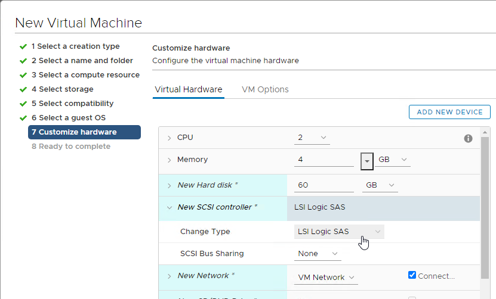
- The master virtual desktop should be configured with a VMXNET 3 network adapter.

- When building the master virtual desktop, you will probably boot from an ISO.
- Before using Horizon Console to create a pool based off of this master image, ensure the CD/DVD drive points to Client Device and is not Connected. The important part is to make sure that ISO file is not configured.

- There’s no need for the Floppy drive so remove it.
- If you have any Serial ports, remove them.
Windows
Omnissa TechZone Manually Creating Optimized Windows Images for Horizon VMs
Preparation
-
Windows 11 Versions - Windows 11 is supported with Horizon 2111 (8.4) and newer.
- Windows 11 22H2 is supported with Horizon Agent 2209 (8.7) and DEM Agent 2209 (10.7) and newer.
- Omnissa says don't add vTPM to the gold image. Instead add the vTPM when creating the Instant Clone pool or Full Clone pool. There are various methods of installing Windows 11 without a vTPM. See Omnissa KB article 85960 Omnissa Horizon and Horizon Cloud readiness for Microsoft Windows 11.

-
vTPM requires a Key Provider. vSphere 7 and newer have a Native Key Provider that does not need any additional servers or licenses.
- In vSphere Client, in Inventory, click the vCenter object. On the right, on the Configure tab, scroll down to Key Providers and add a Native Key Provider.

- After it’s added, select it and then click Back-up to activate it.


- Windows 10 Versions
- Omnissa 51663 Windows 10 Guest OS support FAQ for Horizon 7.13.
- Microsoft 365 Apps is not supported on LTSC. See Changes to Office and Windows servicing and support.
- Visual Studio 2017 and newer are not supported on LTSC. See Visual Studio 2019 Product Family System Requirements.
- VMware Tools. Install the latest version of VMware Tools and Guest Introspection (formerly known as vShield Endpoint) Driver prior to installing the Horizon Agent.
- In vSphere Client, in Inventory, click the vCenter object. On the right, on the Configure tab, scroll down to Key Providers and add a Native Key Provider.
-
See Omnissa Product Interoperability Matrices for supported versions of VMware Tools with different versions of Horizon Agent.
- For the AppVolumes Agent and Imprivata OneSign agent (if applicable), don’t install them until Horizon Agent is installed.
Power Options
- Run Power Options. Right-click the Start Menu to access Power Options.
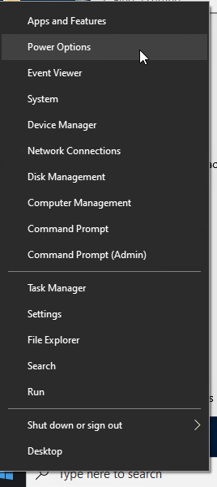
- Click Additional power settings.
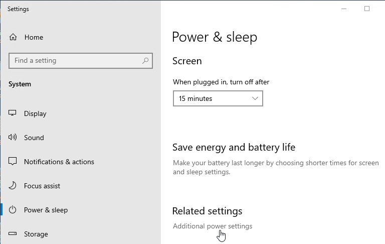
- Select Ultimate Performance, or click the arrow to show more plans, and select High performance.
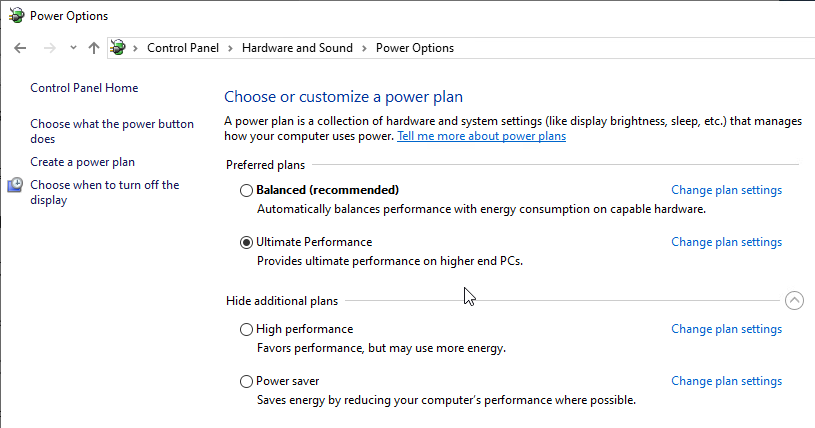
- Next to the power plan, click Change plan settings.
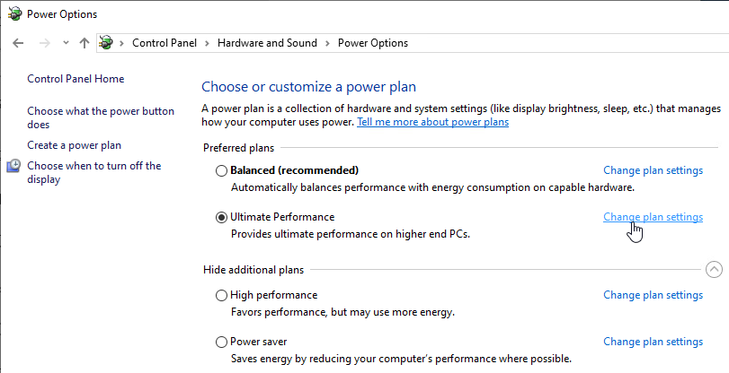
- Change the selection for Turn off the display to Never and click Save changes.
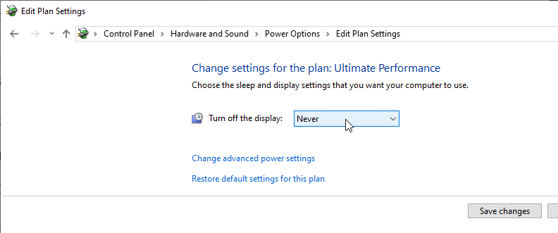
- You can also configure these settings using group policy.
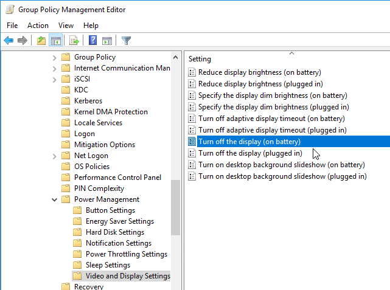
System Settings
- Domain Join. Use sysdm.cpl to join the machine to the domain. Also see Omnissa 2150495 Computer-based Global Policy Objects (GPOs) that require reboot are not applied on instant clones.
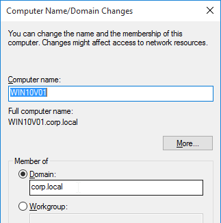
- In System control panel applet (sysdm.cpl), on the Remote tab, enable Remote Desktop.
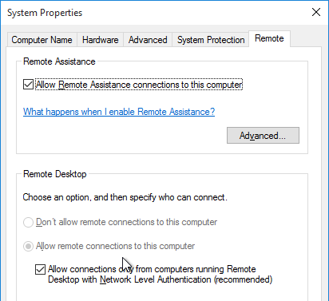
- Activate Windows with a KMS license if not already activated. Note: only KMS is supported with Instant Clones.
Install Applications
Install applications locally if you want them to be available on all virtual desktops created based on this master virtual desktop.
-
Choose installers that install to C:\Program Files instead of to %appdata%. Search for VDI or Enterprise versions of the following applications. These VDI versions do not auto-update so you'll have to update them manually.
- Google Chrome - Chrome Enterprise
- Microsoft Edge - Edge for Business
- Microsoft Teams - Teams for VDI
- Microsoft OneDrive - Install the sync app per machine
- Zoom - Zoom VDI
- WebEx - WebEx VDI
- Cisco Jabber - Jabber VDI
- Etc.
Or you can use a Layering product (e.g. Omnissa App Volumes, Microsoft MSI-X App Attach, Liquidware FlexApp) or App Streaming (e.g. ThinApp, Microsoft App-V). Note: logins are fastest if apps are installed in the master image. All app layering/streaming technologies introduce a logon delay. You can use Microsoft FSLogix App Masking to hide applications and Start Menu shortcuts that users should not see.
Antivirus
Omnissa Tech Zone Antivirus Considerations in a Horizon Environment contains exclusions for Horizon, App Volumes, Dynamic Environment Manager, ThinApp, etc.
Microsoft’s virus scanning recommendations (e.g., exclude group policy files) - http://support.microsoft.com/kb/822158.
Carbon Black
Interoperability of VMware Carbon Black and Horizon (79180)
Windows Defender Antivirus
Configuring Microsoft Defender Antivirus for non-persistent VDI machines - Microsoft Blog
Deployment guide for Windows Defender Antivirus in a virtual desktop infrastructure (VDI) environment - Microsoft Docs

Onboarding and servicing non-persistent VDI machines with Microsoft Defender ATP

For Instant Clones, Defender ATP on-boarding script should run as ClonePrep post-sync script. See Tristan Tyson On-boarding VMware Horizon View Instant-Clone VDI Pools into Microsoft Defender Advanced Threat Protection.
Horizon Agent
Horizon Agent Installation/Upgrade
Install Horizon Agent on the master virtual desktop. Upgrades are performed in-place.
- Latency - In Horizon 2111 (8.4) and newer, maximum latency between the Horizon Agent machine and Connection Server is 120ms. Older versions of Horizon have lower maximum latencies.
- Group Policy - Don't upgrade Horizon Agent to version 2412 or later until the Horizon group policy settings are reconfigured under the Omnissa nodes instead of under the VMware nodes.
-
VMware Tools - Only install Horizon Agent after you install VMware Tools.
- The latest versions of VMware Tools resolve security vulnerabilities.
- If you need to update VMware Tools, uninstall Horizon Agent, upgrade VMware Tools, and then reinstall Horizon Agent.
- See Omnissa Product Interoperability Matrices for supported versions of VMware Tools with different versions of Horizon Agent.
- Horizon 2503 (8.15) is an Extended Service Branch, which is supported for three years from its January 2024 release date.
- Download Horizon Agent 2503 (8.15).
- Run the downloaded Omnissa-Horizon-Agent-x86_64-2503-8.15.0.exe.
- If you want the URL Content Redirection feature, then you must run the Agent installer with the following switches:
/v URL_FILTERING_ENABLED=1 - If you want the UNC Path Redirection feature in 8.7 and newer, then you must run the Agent installer with the following switches:
/v ENABLE_UNC_REDIRECTION=1. You can combine the two switches.
- In the Welcome to the Installation Wizard for Omnissa Horizon Agent page, click Next.
- In the Network protocol configuration page, select IPv4, and click Next.
-
In the Custom Setup page, there are several features not enabled by default. Horizon Smart Policies in Dynamic Environment Manager (DEM) can control some of these features but only if the features are installed.
-
If you want USB Redirection, then enable that feature.
- Horizon Agent 2006 (8.0) and newer does not include Persona.
- If you want Scanner Redirection, then enable that feature. Note: Scanner Redirection will impact host density.
- Horizon Performance Tracker adds a program to the Agent that can show the user performance of the remote session. You can publish the Tracker.

- In Horizon 2206 and newer, Storage Drive Redirection provides faster performance than Client Drive Redirection.
- Click Next when done making selections.
- If you see the Remote Desktop Protocol Configuration screen, then select Enable and click Next.
- In the Ready to Install the Program page, Horizon Agent 2306 and newer have an option to Automatically restart system on successful completion. Click Install.
- In the Installer Completed page, click Finish.
- Click Yes when asked to restart.
- If you want to know what features were selected during installation, look in HKLM\Software\Omnissa\Horizon\Installer\Features_HorizonAgent (or HKLM\Software\VMware, Inc.\Installer\Features_HorizonAgent). Or look in the installation log files as detailed at Paul Grevink View Agent, what is installed?
- To add features to an existing Horizon Agent installation, use the command line as detailed by Terence Luk at Add features to an existing VMware Horizon View 7.x Agent install.

- To verify installation of the URL Content Redirection feature, check for the presence of C:\Program Files\Omnissa\Horizon\Agent\bin\UrlRedirection (or C:\Program Files\VMware\VMware View\Agent\bin\UrlRedirection).
- URL Content Redirection is configured using group policy.
- To verify installation of the UNC Content Redirection feature, check for the presence of C:\Program Files\Omnissa\Horizon\Agent\bin\UncRedirection (or C:\Program Files\VMware\VMware View\Agent\bin\UncRedirection).
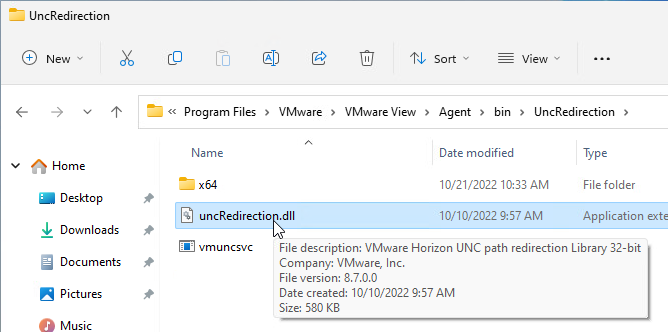


Install/Upgrade Dynamic Environment Manager (DEM) Agent
All editions of Horizon 2006 (8.0) and newer are entitled to Dynamic Environment Management (DEM).
- Horizon Standard Edition and Horizon Advanced Edition are entitled to DEM Standard Edition, which only has personalization features that replace Persona. If you are using FSLogix Profile Containers for profiles, then you probably don't need DEM Standard Edition.
- Horizon Enterprise Edition is entitled to DEM Enterprise Edition, which has all DEM features, including Smart Policies, Privilege Elevation, etc.
DEM 2006 and newer Agents (FlexEngines) require additional configuration to enable DEM Computer Settings. You can either configure registry settings on each DEM Agent machine, or in DEM Agent 2103 and newer you can use an installer command-line switch. Both are detailed at Perform Installation with Computer Environment Settings Support at Omnissa Docs.
- Group Policy Preferences can push these registry keys to the Horizon Agent machines. Or you can manually modify the registry in your master images. The minimum registry values are Enabled and ConfigFilePath as detailed at Perform Installation with Computer Environment Settings Support at Omnissa Docs. For the list of additional registry values, see FlexEngine Configuration for Computer Environment Settings at Omnissa Docs.

-
Command line install looks something like below. The command line installer switch sets the same ConfigFilePath and Enabled registry values as shown above.
msiexec /i "\\fs01\bin\Omnissa\DEM\Omnissa-DEM-Enterprise-2503-10.15\Omnissa Dynamic Environment Manager Enterprise 2503 10.15 x64.msi" /qn COMPENVCONFIGFILEPATH=\\fs01\DEMConfig\general

To install DEM Agent:
- Windows 10 Compatibility - See Omnissa 57386 Omnissa Dynamic Environment Manager and Windows 10 Versions Support Matrix
- Make sure Prevent access to registry editing tools is not enabled in any GPO since this setting prevents the FlexEngine from operating properly.
- DEM 2503 (10.15) is an ESB release.
- Based on your entitlement, download either DEM 2503 (10.15) Enterprise Edition. For ESB Horizon, download the DEM version included with your ESB version of Horizon.
- Run the extracted Omnissa Dynamic Environment Manager Enterprise 2503 10.15 x64.msi.
- In the Welcome to the Omnissa Dynamic Environment Manager Enterprise Setup Wizard page, check the box next to I accept and click Next.
- In the Destination Folder page, click Next.
- In Choose Setup Type page, click Custom.
- In the Custom Setup page, click Next. Note: the DEM Management Console is typically installed on an administrator's machine.
- In the Ready to install Omnissa Dynamic Environment Manager Enterprise page, click Install.
- In the Completed the Omnissa Dynamic Environment Manager Enterprise Setup Wizard page, click Finish.
-
If you have PCoIP Zero Clients that map USB devices (e.g. USB drives), then you might have to set the following registry value:
-
HKLM\Software\Omnissa\Omnissa VDM\Agent\USB
- UemFlags (DWORD) = 1
- DEM is enabled using Group Policy and configured using the DEM Management Console.
-
DEM can also be enabled without Active Directory (Group Policy); see Omnissa article 2148324 Configuring advanced UEM settings in NoAD mode for details.
-


Logon Monitoring
See Omnissa 93158 Information about changes in logon timing data format in Horizon form Horizon 8 2111 and Later.
By default, in services.msc, the Omnissa Horizon Logon Monitor service (or VMware Horizon View Logon Monitor service) is not running. Set it to Automatic and start it.

The logon logs are stored at C:\programdata\VMware\VMware Logon Monitor\Logs on each Horizon Agent.

Inside each session log file are logon time statistics.

ClonePrep – Rearm
By default, when Horizon creates Instant Clones, one of the tasks that ClonePrep performs is to rearm licensing. You can prevent rearm by setting the following registry key:
-
HKEY_LOCAL_MACHINE\SYSTEM\CurrentControlSet\services\omn-instantclone-ga (or vmware-viewcomposer-ga)
- SkipLicenseActivation (DWORD) = 0x1
Microsoft FSLogix
Why FSLogix?
Microsoft FSLogix has two major features:
- Profile Container is an alternative to DEM Personalization.
- App Masking is an alternative to App Volumes.
DEM has three categories of features: Personalization, User Settings, and Computer Settings. FSLogix Profile Container only replaces the Personalization feature set. You typically do FSLogix Profile Container for profiles and use DEM for User Settings and Computer Settings. Here are some advantages of FSLogix Profile Container over DEM Personalization:
- FSLogix Profile Container saves the entire profile but DEM Personalization requires you to specify each setting location that you want to save. FSLogix is "set and forget" while DEM Personalization requires tweaking for each application.
- At logon, DEM Personalization must download and unzip each application's profile settings, which takes time. FSLogix simply mounts the user's profile disk, which is faster than DEM Personalization.
- FSLogix Profile Container has special support for roaming caches and search indexes produced by Microsoft Office products (e.g. Outlook .ost file).
- FSLogix is owned, developed and supported by Microsoft.
Here are some FSLogix Challenges as compared to DEM Personalization:
- FSLogix Profile disk consumes significant disk space. The default maximum size for a FSLogix profile disk is 30 GB per user.
- High Availability for FSLogix Profile disks file share is challenging. The file server High Availability capability must be able to handle .vhdx files that are always open. DFS Replication is not an acceptable HA solution. One option is Microsoft Scale Out File Server (SOFS) cluster. Another option is Nutanix Files.
Omnissa App Volumes has some drawbacks, including the following:
- Completely separate infrastructure that must be built, maintained, and troubleshooted.
- Introduces delays during logon as AppStacks are mounted.
- AppStacks can sometimes conflict with the base image or other AppStacks.
An alternative approach is to install all apps on the base image and use FSLogix App Masking to hide unauthorized apps from unauthorized users. No delays during logon.
Microsoft FSLogix is free for all Microsoft RDS CALs, Microsoft Virtual Desktop Access per-user CALs, and all Microsoft Enterprise E3/E5 per-user licenses. Notice that per-device licenses are excluded. See Eligibility Requirements at Microsoft Docs.
FSLogix Installation
Do the following to install Microsoft FSLogix on the Horizon Agent machine:
- Go to https://docs.microsoft.com/en-us/fslogix/install-ht and click the download link.
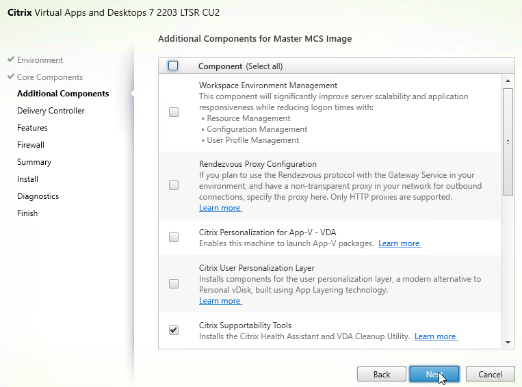
- Extract the downloaded .zip file.
- In the FSLogix \x64\Release folder, run FSLogixAppsSetup.exe.

- Check the box next to I agree to the license terms and conditions and click Install.

- In the Setup Successful page, click Restart.

- Make sure the Windows Search service is set to Automatic and Running.

- If Office is already installed, then repair the Office installation after installing and starting the Windows Search Service.

FSLogix is configured through Group Policy or by editing registry values on each FSLogix Agent machine.
Windows OS Optimization Tool
- See Windows OS Optimization Tool for Horizon Guide at Omnissa Tech Zone for details on this tool.
- Download the Windows OS Optimization Tool. Version 2503 supports Horizon 2503.
- Run VMwareOSOptimizationTool-x86_64.exe.
- On the Optimize tab, click Analyze on the bottom of the window.
- Near the top of the window click the Common Options button and make your selections on each of the pages. Click OK when done.
- The top right box named Analysis Summary shows the number of optimizations not yet applied.
- Review the optimizations and make changes as desired. Then on the bottom right, click Optimize.
- The History tab lets you rollback the optimizations.
- The Finalize tab contains tasks that should be run every time you seal your parent image.
- The Update tab lets you re-enable Windows Update so you can update the parent image.


Additional Optimizations
Additional Windows 10 Optimizations
-
James Rankin Improving Windows 10 logon time:
- Use Remove-AppXProvisionedPackage to remove Modern apps. See the article for a list of apps to remove. Also see James Rankin Everything you wanted to know about virtualizing, optimizing and managing Windows 10...but were afraid to ask - part #3: MODERN APPS
- Import a Standard Start Tiles layout (Export-StartLayout)
- Create a template user profile
- Carl Luberti (Microsoft) Windows 10 VDI Optimization Script
Snapshot
- Make sure the master virtual desktop is configured for DHCP.
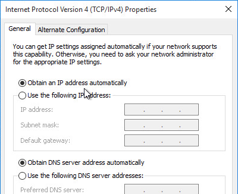
- If connected to the console, run ipconfig /release.
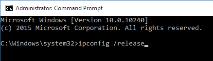
-
Run antivirus sealing tasks. For example:
- Symantec: Run a full scan and then run the Virtual Image Exception tool - http://www.symantec.com/business/support/index?page=content&id=TECH173650
- Symantec: run the ClientSideClonePrepTool -http://www.symantec.com/business/support/index?page=content&id=HOWTO54706
- Base Image Script Framework (BIS-F) automates many image sealing tasks. The script is configurable using Group Policy.


- Shutdown the master virtual desktop.

- Edit the Settings of the master virtual machine and disconnect the CD-ROM. Make sure no ISO is configured in the virtual machine.
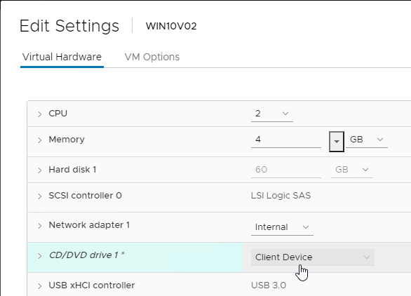
- Take a snapshot of the master virtual desktop. Instant Clones requires a snapshot.
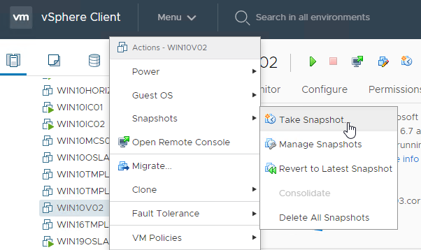
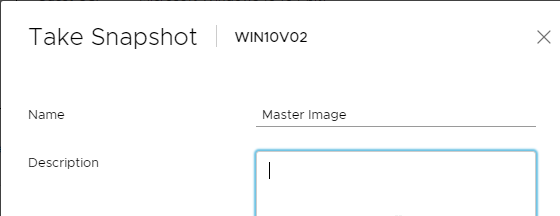
Related Pages
- Back to Omnissa Horizon 8